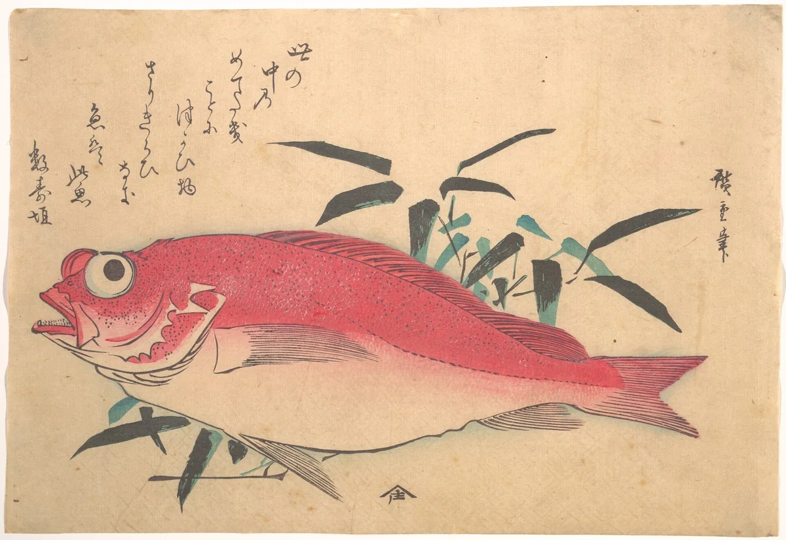
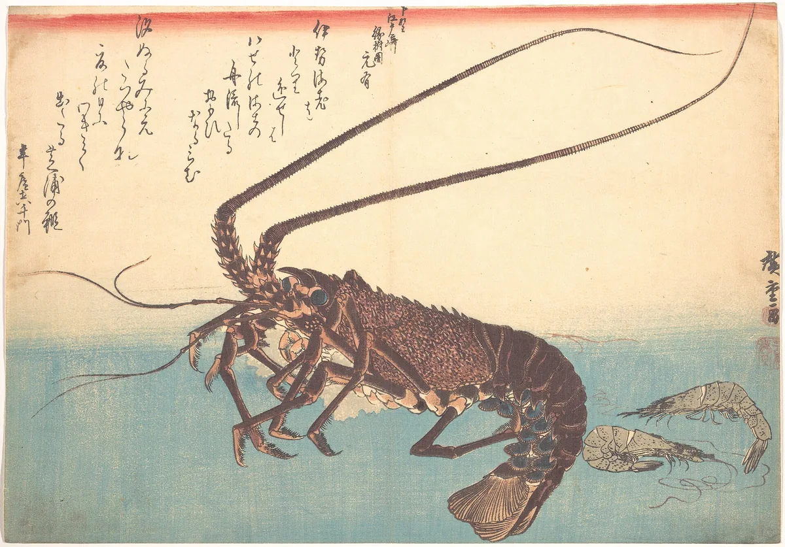
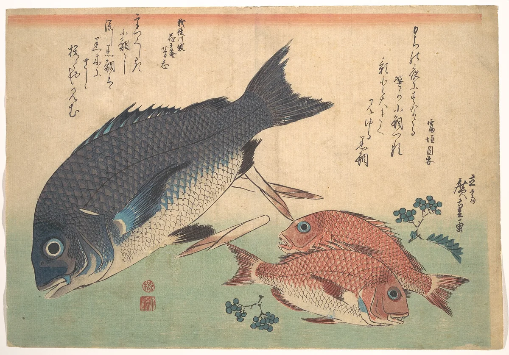
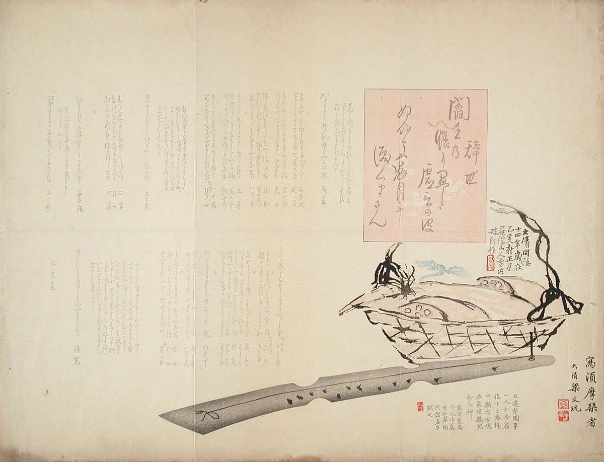

New Year 2027 · osechi ryōri
Five tiers for the first three days
Osechi is cooked before the year turns, so that no fire need be lit for the first three days. It comes packed in a jūbako, a box of stacked tiers, because good things should pile up.
一の重 Celebration
一の重 ichi-no-jū
The small things that make it a celebration, eaten first, with the first sake.
- Kuromame black soybeans
- Mame: to be hard-working, and well.
- Kazunoko herring roe
- Thousands of eggs: many children.
- Tazukuri candied sardines
- Once spread on the rice fields: a good harvest.
- Datemaki rolled omelette
- Rolled like a scroll: learning.
- Kurikinton chestnut and sweet potato
- Gold: a prosperous year.

二の重 From the grill
二の重 ni-no-jū
Fish and prawns from the grill, cooked the day before and eaten cool.
- Tai sea bream
- Medetai: joyful.
- Ebi prawns
- Long whiskers and a bent back: to live until bent with age.
- Buri yellowtail
- A fish that changes its name as it grows: to rise in the world.

三の重 Simmered
三の重 san-no-jū
Roots and shoots simmered together in one pot, so that a family stays together.
- Renkon lotus root
- Holes to see the year ahead through.
- Satoimo taro
- Small corms around a mother: many children.
- Gobō burdock
- A root that goes deep: a family settled.
- Takenoko bamboo shoots
- Growing fast and straight.

与の重 Vinegared
与の重 yo-no-jū
Never “the fourth”: four is shi, which also says death. This tier is yo, and holds the sharp, clean things.
- Kōhaku namasu daikon and carrot
- Red and white, like the cord on a gift.
- Kikka kabu turnip
- Cut into a chrysanthemum.

五の重 Kept empty
五の重 go-no-jū
The last tier is left empty: room for the good things the year will bring.
Ours comes empty too, lacquered and clean. Fill it with what your family likes, or leave it as it is.
Order by 26 December
For four, in a lacquered box
Packed on the morning of 31 December. The box is lent with the food, wrapped in a furoshiki.
A deposit of ¥10,000 holds your box. The rest is paid when you collect it.
Collecting it
Collect
31 December, 9:00 to 15:00, at the side door on Tominokōji. Bring your reservation number.
Delivery
Within Kyoto city, ¥2,200, between 10:00 and 14:00 on the 31st.
Returning the box
By 15 January, washed by hand and dried, never soaked. The furoshiki is yours to keep.